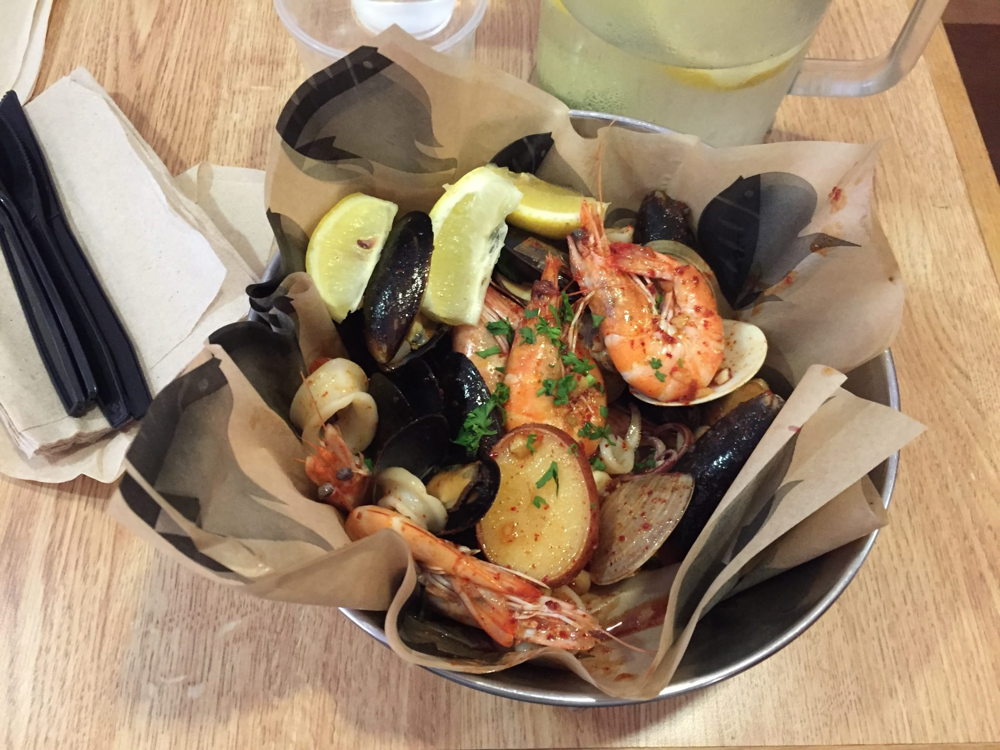
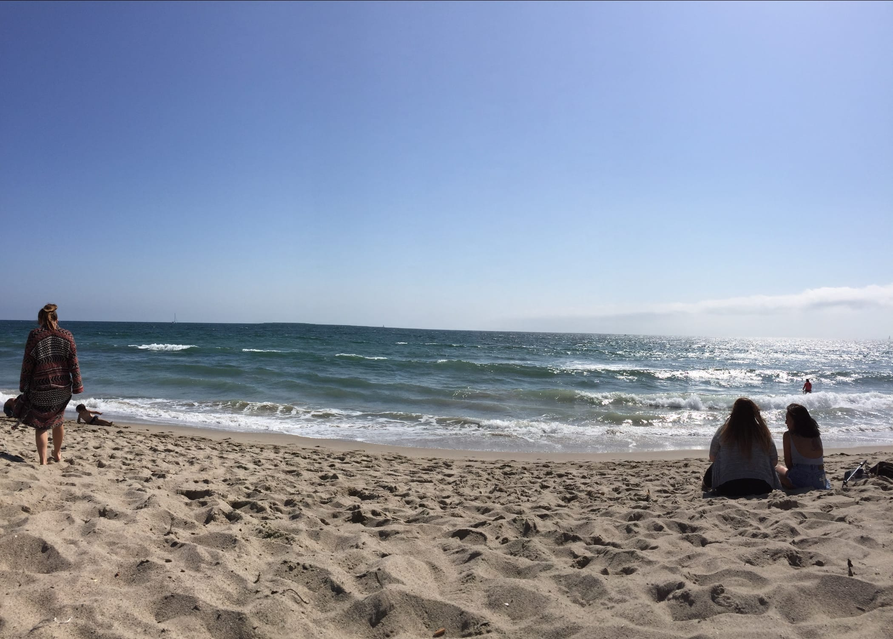
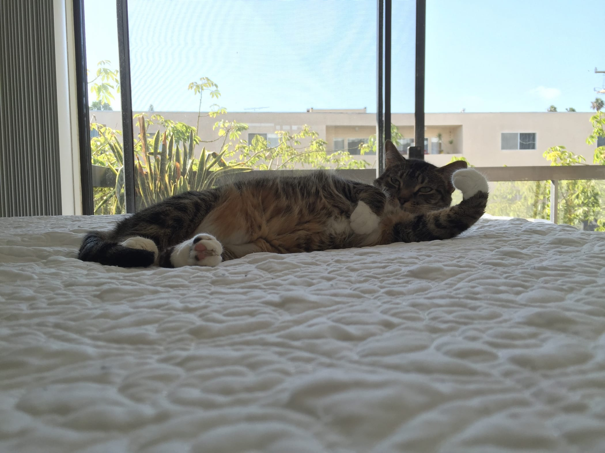
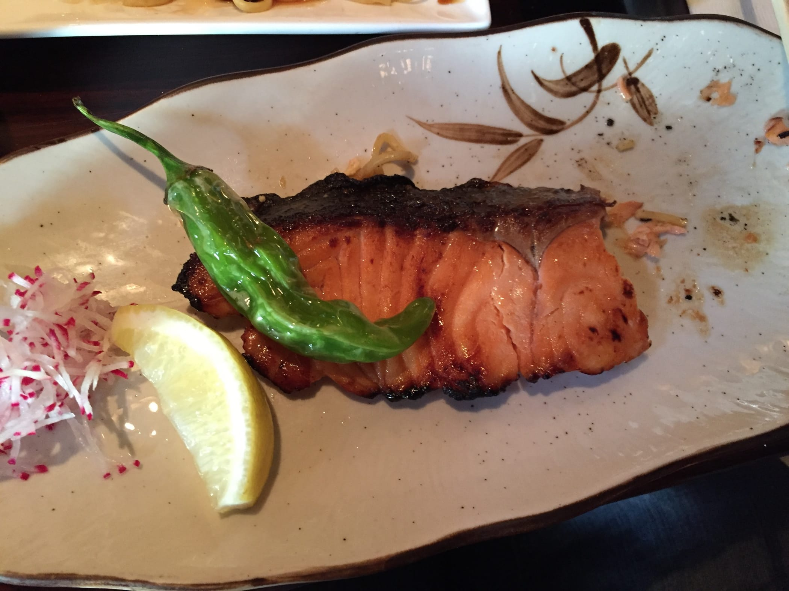
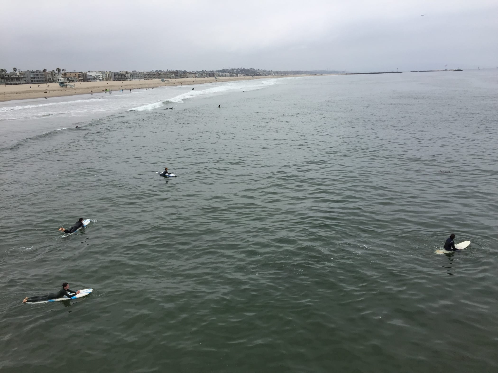
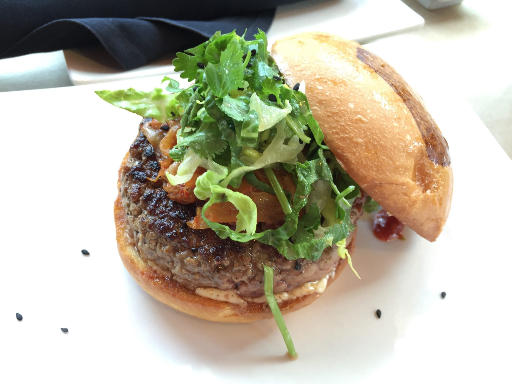
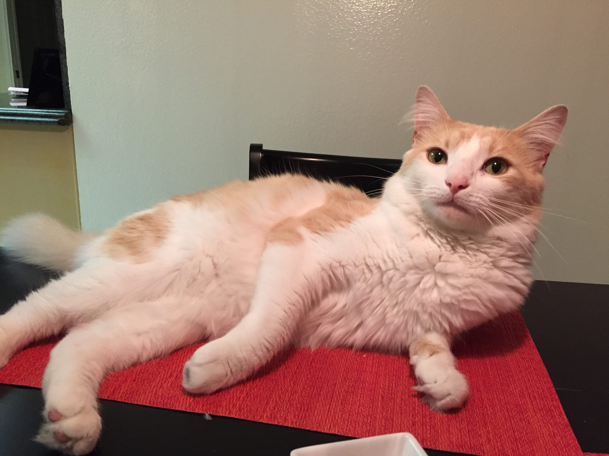
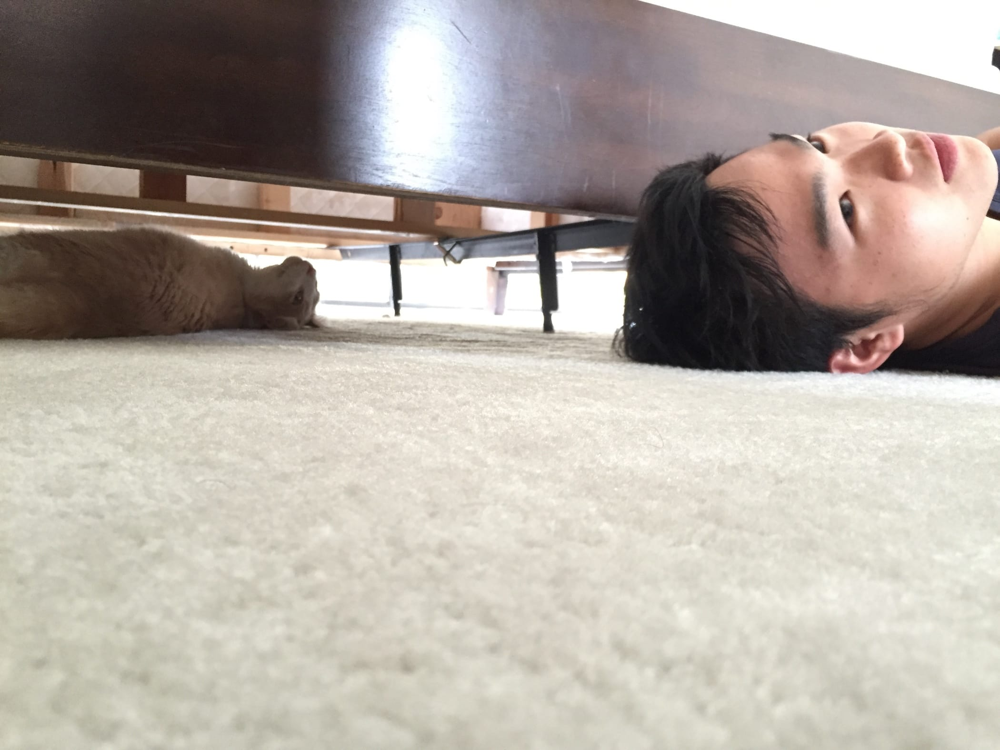
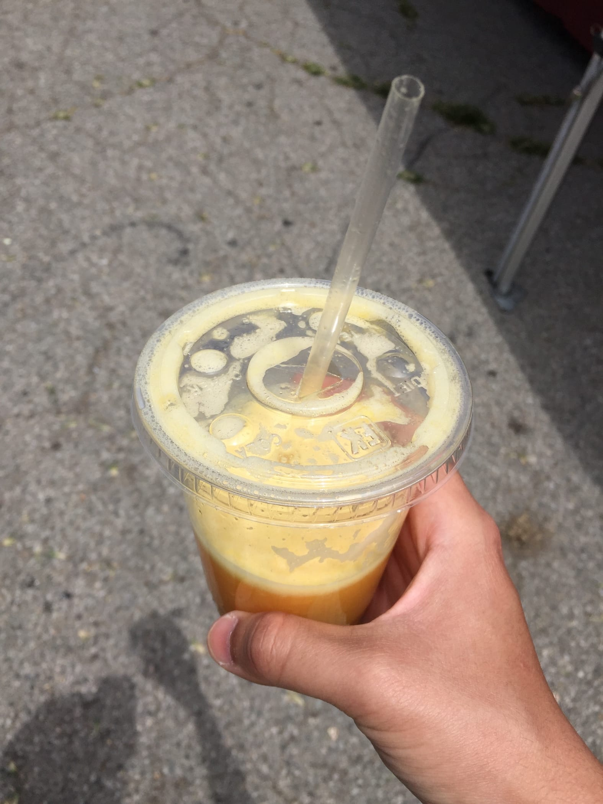

Monday, 30 May 2016 at 10:04 AM
Weekly Log #9
UserTesting
Hubot
Added some functionality for the Hubot. I was trying to debug the bot by logging JSON payloads to the console, but unfortunately Heroku is structured in such a way where their output is printed asynchronously, meaning that I end up with jumbled-up lines of JSON. To work around this, I had the bot post the JSON to a Slack channel. Now the Slack channel is spammed full of JSON 😢
Friday - Sunday
We went to LA. We had this plan for a couple of weeks now 😄
The beautiful beach of Santa Monica

Amazing lunch

Sitting near the sea
We stayed at an AirBNB. It was almost like a hotel - there was a booklet telling us the house rules and places of interest, and there were towels and toiletries provided. Honestly, it was beyond my expectations. 🏨

One of the hosts’ cats. Meow 🐱

Dinner at a Japanese restaurant

Venice beach

Umami burger

More cats! 🐱

Catvis Tan
Farmer’s Market
We went to a Farmer’s Market nearby, which is a place for people to sell their goods. There was live music, great food, and shops selling other items.

Fresh orange juice. Slightly sour, though.